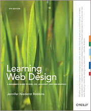

Before start Start day 1 [1.1] [1.2] [1.3] [1.4] [1.5] Start day 2 [2.1] [2.2] [2.3] [2.4] [2.5] [2.6] [2.7] Start day 3 [3.1] [3.2] [3.3] [3.4] [3.5] [3.6]
The following aspects of style will be handled in this course:
A widly know test is used to see the compliancy with different style related implementation is http://acid3.acidtests.org/ for some more explanation see: http://en.wikipedia.org/wiki/Acid3
TODO Add a link to http://learnlayout.com/ and text to rework on the old skills
Cascading Style Sheets are a way to describe the style in a rules seperatly from your document (which is described by the DOM). This seperates the structure and style of the page. An advantage of this seperation is that a single style can be added to different pages/documents or even whole sites in a consistent, declarive way. For a nice variarty / show of power of style based differentation on the same content see http://www.csszengarden.com/. ALthough the page is not maintained it already shows the immense power of ccs and design of a page.
This cascading style sheets uses references to the DOM elements to adjust the style of one or more DOM elements. The style describing can use inheritance so that what style description can inherit part of a previous style description. The syntax of stylesheets are:
<style type="text/css">
/* comment */
selector(-s) {
property1: value1;
property2: value2;
property3: value3;
}
</style>
The selector identifies which element should be manipulated. These elements are all box based (rectangular). The part between the curly brackets are a declaration of the adjustments. There is a wide variety of possible selector and choicing these selectors wisely will greatly benifit the maintainability of a site. In the following code example different type of selectors are shown:
/* Descendant selectors adjust all childeren subelm contained by parent elm */
elm subelm {declaration}
/* Child selector: only adjust direct childeren subelm of parent elm */
elm > subelm {declaration}
/* Adjacent sibling selector : only adjust subelm directly after the parent elm */
elm > subelm {declaration}
/* General sibling selectors: css3 only, select all subelm after the parent elm */
elm ~ subelm {declaration}
/* ID Selectors: directly selection on elm */
<elm id="identifier1">
elm#identifier1 {declaration}
/* Class selectors group elm in classes and set style by classes */
<elm class="classname">
elm.classname {declaration}
/* Pseudo class selectors these are state based selectors example state based selectors:
:link :visited :focus :hover :active :first-line :first-letter */
elm:statebasedselector {declaration}
For more details on the pseudo selector see http://www.smashingmagazine.com/2011/07/13/learning-to-use-the-before-and-after-pseudo-elements-in-css/.
One of the earlier pattern in describing a style was by being as specific as possible. Although this was a best practice using class like selector in a less specific and better reusable way seems preferrable. A video with real world examples is shown in http://vimeo.com/70115794
The following rules apply to handle conflicts/ priority in stylesheet rules. In general a style is determined by what the author of a page defined as style, if not available the style a user has defined as there personal style and if that is not applicable the browser style is used (also called user agent style sheet). If a property is set more than ones in one of these ways the last setting will be used by the browser.
For properties it is important if a property inherits.
Sharing results
An not exhaustive list of the new features of CSS3 are:
Although many of the modern browsers have implemented most of the CSS3 properties it must be said that the CSS3 specification is not finalized yet and older browser lack support for these properties. And to show an example of it's not exhaustiveness of the list see http://css-tricks.com/time-element/
Sharing results
You can in general differentiate between the following type of flexibility in layouts:
TODO The transition from table-based layouts to CSS-based ones
In a very general way you can say that the fixed format is more predicatable but doesn't scale with chnages if format. The more fluid versions have problems with sometimes a very long line length and a lot of calculation. The Elastic version can become to big and has extra costs to scale imgaes, pictures and videos. The last solution is currently very popular, with mostly used example is bootstrap which is made by Twitter.
For an introduction in @font-face css3 feature, see http://www.html5rocks.com/en/tutorials/webfonts/quick/. TODO retranslate next paragraph The Vegur font isn't in Raphaël, nor is any font for that matter. And besides, most fonts use TrueType(TTF) or OpenType(OTF) format. To get from those formats into something that is usable by Raphaël, we need to convert them using a tool called Cufón. Cufón allows you export the different font styles of a given font (regular, bold, italic, bold italic, etc) for use with Raphaël. It is outside the scope of this tutorial to cover Cufón in detail. Check the aforemention link for more details. A great source of unemcumbered fonts for your applications is the Google Font Directory. (taken from http://www.html5rocks.com/en/tutorials/raphael/intro/) And this SVG vs Canvas Given that they are both methods to draw objects on the screen, it's often not immediately clear why you should use one over the other. The two mediums have vastly different approaches. Canvas is an immediate mode API is much like drawing with crayons. You can clear or destroy part of the drawing but you can't by default revert or alter a previous stroke. Canvas is also a raster bitmap so it is is very much subject to pixelation when images are scaled. SVG on the other hand, as previously mentioned can serve multiple resolutions with the same level of detail and can be scripted. TODOAlso call http://www.createjs.com/#!/TweenJS/demos and possibly also easel.js (next to pixie.js kinetic and the whole article to compare them) Overview of good canvas technics (little bit game oriented) https://www.youtube.com/watch?v=NG5uDXCOr8s
TODO https://hacks.mozilla.org/2009/10/font-control-for-designers/ check if this is introduced.
Opinions about the differences between sass and less can for example be found at. Use-case: browser specific prefex and variables. For a good introduction in less, see http://designshack.net/articles/css/using-less-js-to-simplify-your-css3/. The jess tool also works in most on-line IDE which we described in the first lesson.
Sharing results